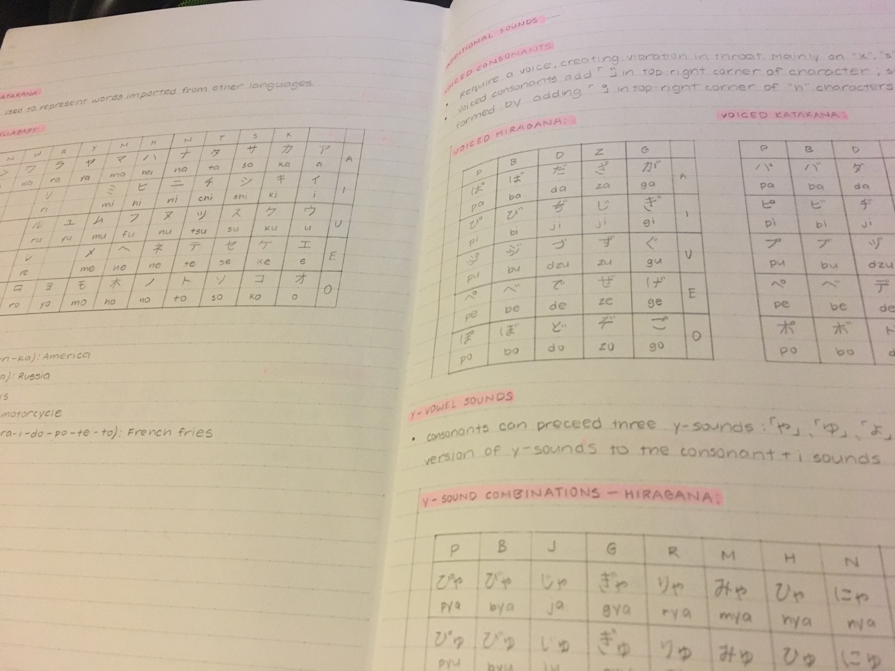

My Note-taking
My Materials
- Mechanical pencil: it's just more convenient when I'm writing a lot to not have to sharpen my pencil.
- Highlighters: they add color and emphasis to certain parts of my notes.
- Eraser: I make several mistakes, but it's like they never happened.
- Ruler: whenever I need a straightedge for graphs or lines.
- Notebook: good paper is essential.
Some Pages

Above are some math notes for Calculus. It's a subject that I'm self-studying on Khan Academy. I've been doing my math notes on blank printer paper since the lines can distract me somewhat. The blank canvas makes any diagrams that I have much clearer.

These two pages are from my notes on Japanese. It was very important for me to write the basic syllables down since they're the building blocks of the language. The more complicated looking symbols are kanji, which distinguish vocabulary. It's helpful to always have a reference nearby as I advance with the language.
For me, the best thing about taking notes is that I have knowledge to look back to. Hopefully, I create notes that are helpful enough to aid someone that wants to learn what I've learned as well.
Back Next